Bulimia is about vanity.
Myth. Stanford psychiatrist Dr. Debra Safer told us eating disorders are "not about vanity." They are illnesses tied to emotions, genetics and brain chemistry.
A bulimia awareness campaign
Six Bayview Secondary HOSA students helping young people understand bulimia, spot it early and ask for help.
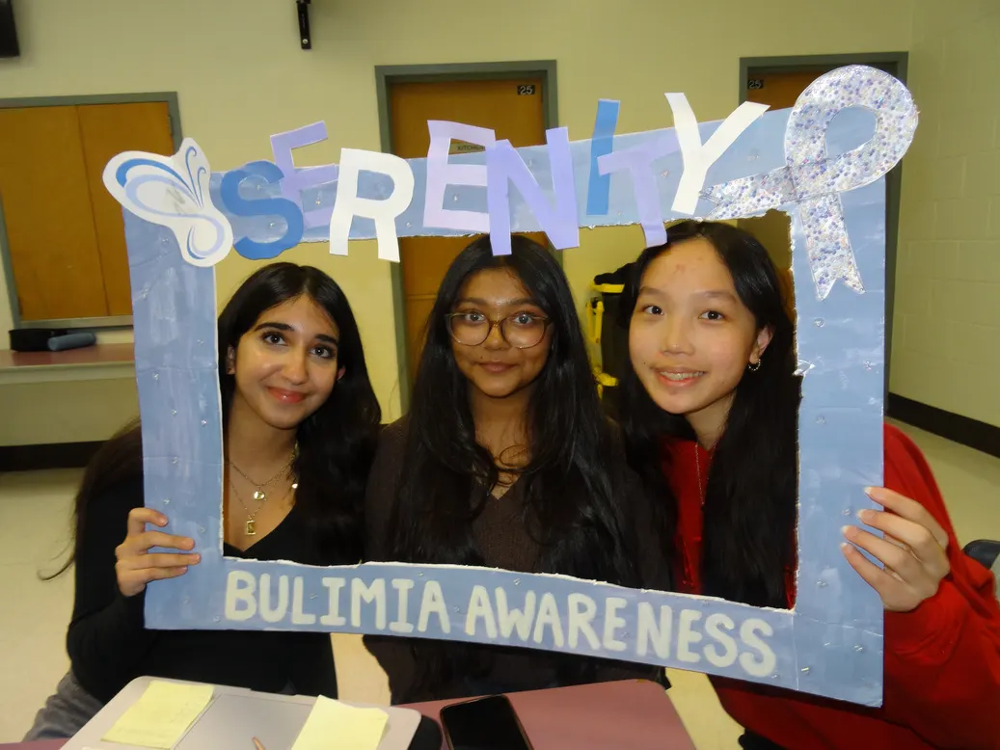
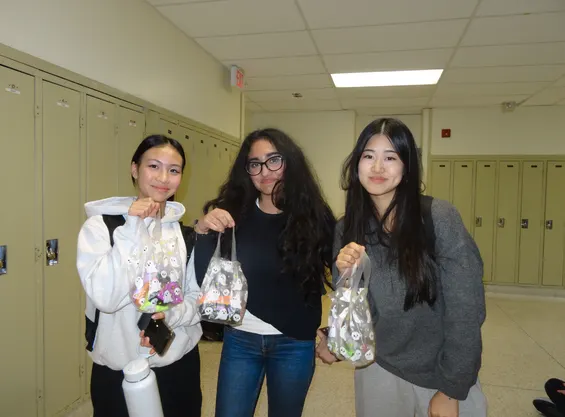
Bulimia nervosa is a serious illness involving cycles of binge eating followed by trying to make up for it. About 1% of people will have it in their lifetime, roughly 83 million worldwide. Yet it rarely shows up in the media, so many young people never learn the signs.
Serenity is a youth-led project founded in 2026 by six students at Bayview Secondary School. We teach 14 to 24 year olds about the biological, psychological and social roots of bulimia, challenge the myths around it, and connect people with reliable help.
Working with our advisor, we focused on what makes bulimia more likely: beauty standards, dieting, family history and emotional health. Our goal is a community where people with eating disorders feel heard, understood and safe asking for support.
Build awareness
10 posts shared
Science-based posts on Instagram and TikTok that explain risk factors, warning signs and treatment in plain language.
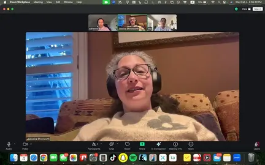
Jessica Ehrenworth has over 21 years of experience and founded Transformational Growth Psychotherapy. She helped us explain bulimia to youth without oversimplifying it or leaning on stereotypes.
Eating disorders affect "both physical health and emotional well-being," and are "not about vanity."
Dr. Safer stressed that eating disorders are not limited to teenage girls or any one background. Her input shaped how we write: inclusive, grounded in science and free of stereotypes.
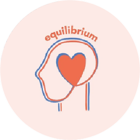
Bulimia comes from a mix of biological, psychological and social factors. Stigma and its effects on the body and mind can stop youth from noticing symptoms or reaching out.
Five things people often believe about bulimia. Pick an answer to see what the research says.
0 of 5 correct
Bulimia is about vanity.
Myth. Stanford psychiatrist Dr. Debra Safer told us eating disorders are "not about vanity." They are illnesses tied to emotions, genetics and brain chemistry.
You can tell someone has bulimia by how thin they are.
Myth. Many people with bulimia have a typical body weight. That is one reason it often goes undiagnosed.
Only teenage girls get eating disorders.
Myth. Eating disorders can affect anyone, of any gender, age or background.
A dentist can be one of the first people to notice signs of bulimia.
Fact. Bulimia can damage teeth and the mouth, so dental checkups sometimes catch it before anyone else does.
People can recover from bulimia.
Fact. About half of people fully recover within ten years, and treatment such as CBT helps. The earlier someone gets support, the better.
You got 0 of 5. Share what you learned with one person this week.
We handed out over 50 handmade kits with stress balls, Halloween stickers, helpline cards and wellness tips, put together with Ms. Ehrenworth. Halloween can make body image worries and guilt around sweets worse, so the bags were built to ease that stress and encourage a more balanced relationship with food.
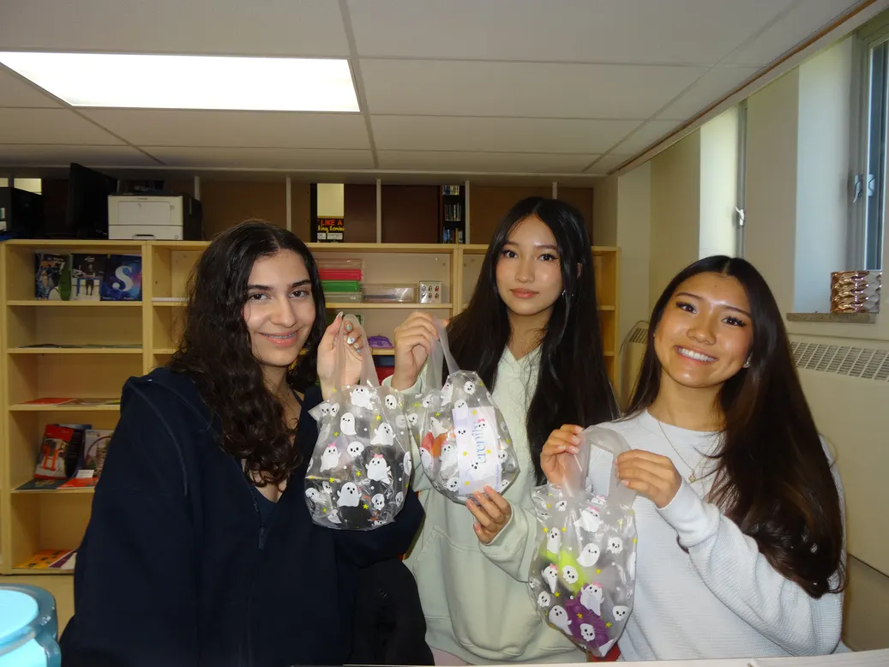
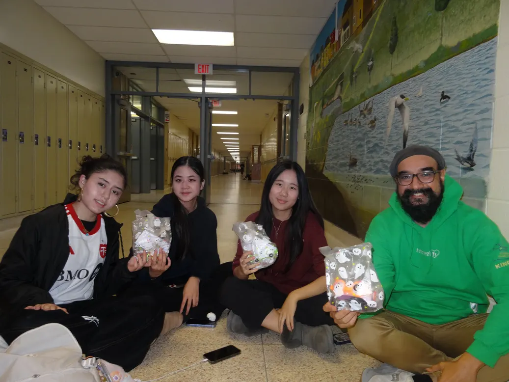
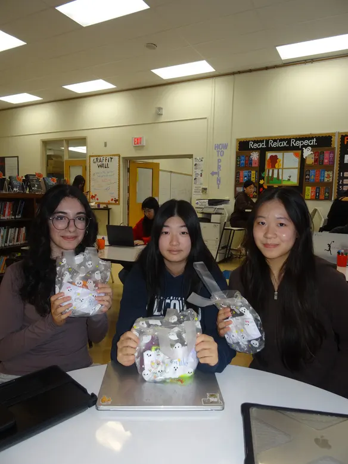
We put up banners around Bayview with our logo, mission and a QR code to our Instagram, which brought in 386 new followers. Students posed with our custom frame for a reel that passed 2,000 views and 70 likes, pointing people to posts on warning signs, risk factors and treatment.
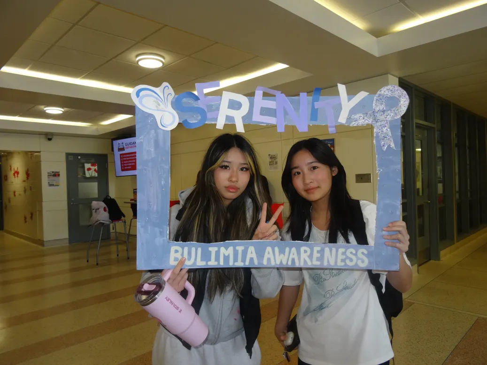
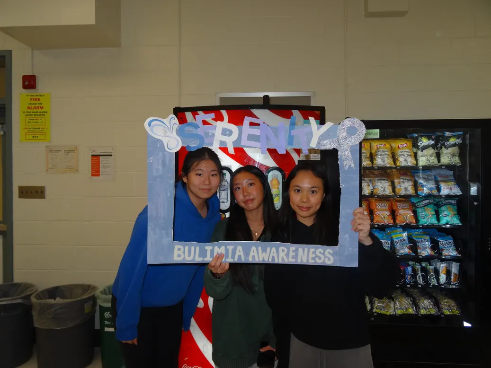
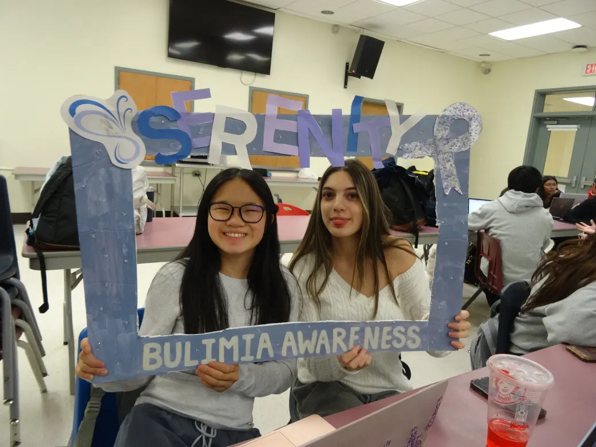
We took Serenity into classrooms and school gatherings at Bayview, sharing what bulimia is, how to recognize it and where to find help.
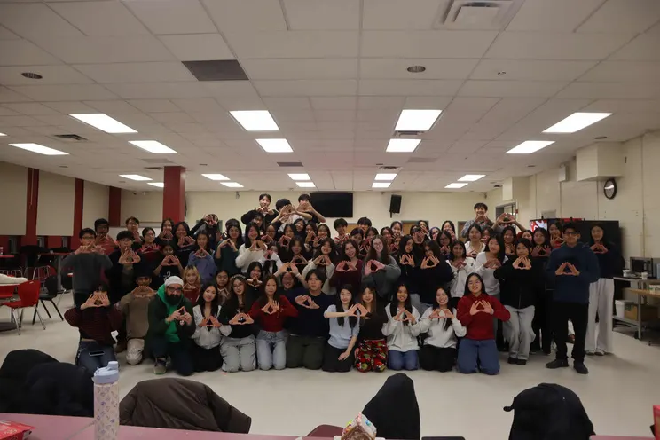
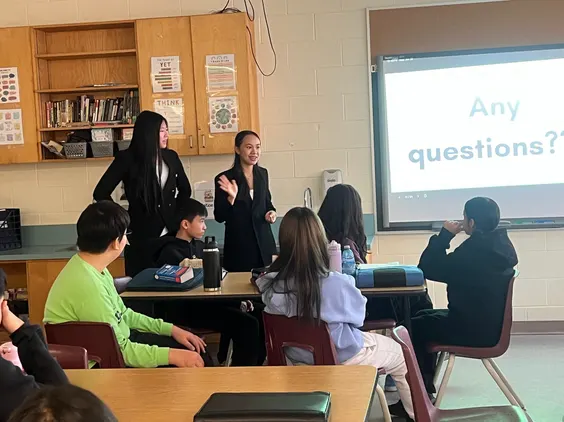
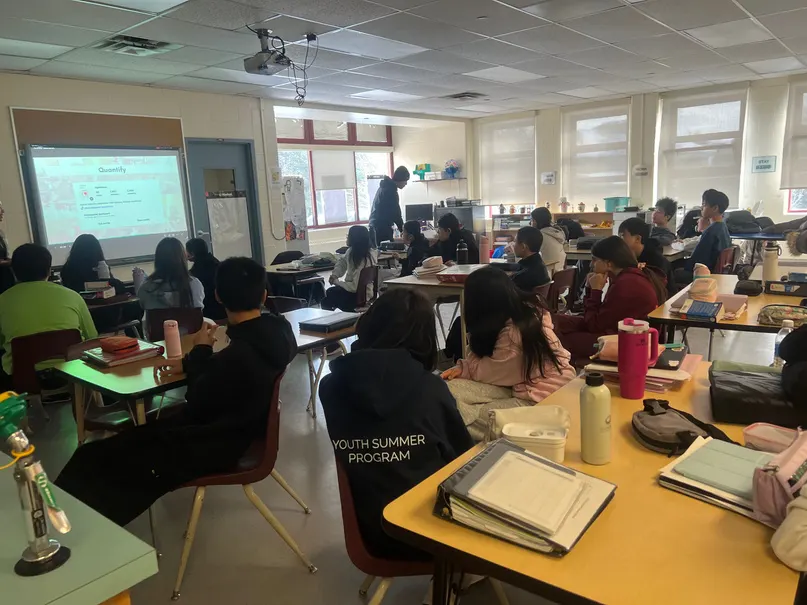
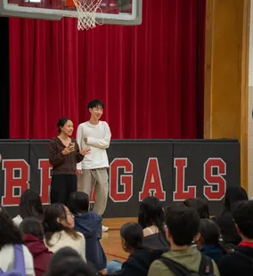
Partner with national and international organizations, including the Canadian Mental Health Association and the National Eating Disorder Information Centre.
Host a yearly eating disorder awareness summit that brings together youth advocates, clinicians and policymakers.
Reach over 2,000 students across several school boards, working with educators and health professionals.
Grow onto YouTube and LinkedIn, and run collaborative campaigns that share reliable information.
People with bulimia need specialized support, not judgment. In an informed community, they can live confident, meaningful lives during and after recovery.
We will keep pushing for compassionate conversations about eating disorders in schools, workplaces and healthcare, guided by our core values of diversity, inclusivity and equity. Every contribution, of any size, helps break the stereotypes.
In an emergency, call 911. Serenity is a student awareness project and does not give medical advice. Talking to a doctor, counsellor or trusted adult is a good first step.
Reaching youth where they scroll
We launched on Instagram with our mission and a community survey, then posted on risk factors, misdiagnosis, and the physical and mental effects of bulimia. Short TikTok videos took the facts further. All our resources also live on our Carrd page.
A few of our posts
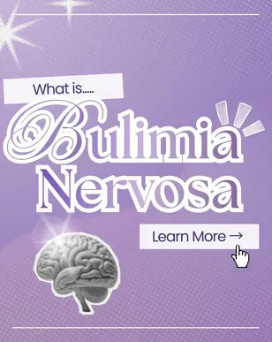
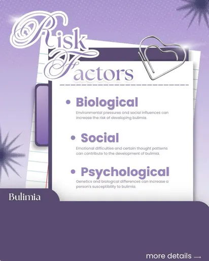
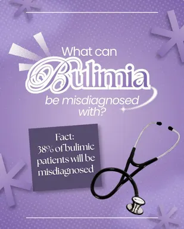
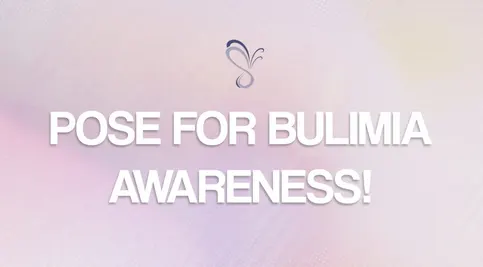
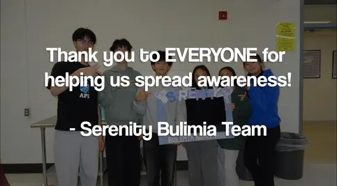